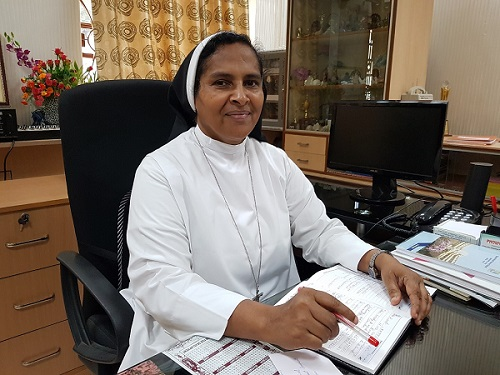

School About
Sacred Heart Convent School(A Unit of Priti Nilaya Trust) is an English-medium Catholic Education private school for girls run by Apostolic Carmelite nuns in the city of Jamshedpur, India. It is registered under the Indian Societies Registration Act of 1860 under the title - The Apostolic Carmel Educational Society.
The school has grades from kindergarten to 12th (Plus Two). Sacred Heart Convent School was founded on 15th January 1945. The school is affiliated with the Council for the Indian School Certificate Examinations in New Delhi and also offers the Plus Two (12th grade) Course in Arts, Science and Commerce.
principle's talk

s.c naydu
Sacred Heart Convent School, believe in imparting quality learning to students to equip them with skills needed in the 21st Century.
Guided by the vision of the Apostolic Carmel Sisters, we inculcate in our students a holistic approach towards life. We are committed to groom the children into spiritually oriented, academically excellent, emotionally balanced, morally upright and socially concerned individuals.
We take pride in announcing that in the 'Indian School Rankings Award' Sacred Heart Convent School was awarded the distinction of being the 'Best Day